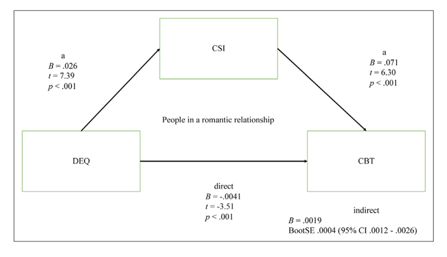

Chapter 11 第十一讲：回归模型(四)：中介分析
本章继续探讨回归模型，除了R代码与操作外，本节课还涉及两个非常简单的知识点。
为什么我们把中介模型放到回归模型里边？
我们在做中介分析的时候， 乃至在进行心理学讨论的时候，到底在做什么样的推断？ 我们希望通过中介模型达到什么样的科学研究效果。
11.2 线性模型回顾
11.2.1 线性模型及模型检验
我们首先来回顾一下线性回归模型：
- 回归方程用于分析一个因变量与多个自变量之间的关系。在回归中，将一个或多个自变量视为整体，对因变量进行预测，通过普通最小二乘法（OLS）或最大似然估计法(ML)进行拟合，解释不了的成分则被视为残差；而我们的目的在于，舍弃残差（随机部分），而获得可解释的成分。
除此之外，下图Anscombe’s Quartet中展示了经典的、检查原始数据的情境。尽管四种数值摘要非常相似，但每组数据的图形分布却截然不同。这四组数据分别展示了不同的数据特征和问题。 而我们研究中的线性模型，适合的是有内在线性关系的数据。当我们的数据间不存在线性关系的时候，就会导致一些问题。
[anscombe_quartet]

上面提到的这些问题，有的时候可以通过一些模型诊断的方法来将其诊断出来，
比方说下图performance::check_model的回归模型评估结果中，我们可以看到，当有一个极大的偏移值的时候，我们的估计会产生误差。
[performance]
lm(y ~ x,data = anscombe_quartet %>%
dplyr::filter(dataset == '(3) Outlier')) %>%
performance::check_model(check = c('linearity','outliers')) #<<
11.2.2 多元线性模型的局限
当然，上述这些问题都是技术上的问题， 可以通过其他更稳健的方法来解决。 但我们探讨的关键是回归模型，它能告诉我们的科学问题到底是什么？ 如果我们回到宏观的科学的层面，我们为什么要做研究？我们可以说科学的目的就是对科学问题进行“描述、解释、预测、控制”。
我们的模型可以分为：“描述模型”、“推断模型”、“预测模型”，而回归兼具这三种功能。
- 回归模型作为描述模型。
假如说我们有两个变量，存在两组数据，我们不关心它们的内在机制，
而是想把这两个变量之间的关系描述出来。
那么这个时候回归模型，就可以提供帮助。
比如可以使用LOESS(即geom_smooth()中method默认的参数)对数据进行描述；
当然也可以用相关，但是我们知道GLM肯定是更强大的，包括我们可以用层级模型，就是广义的线性模型，都是回归模型，
- 回归模型作为推断模型。
描述模型中，只是把关系刻画出来，不关心它是否显著，但是推断模型则不一样，我们希望去知道它有没有达到某一个特定的阈值，比方说在心理学中，我们就特别希望知道是不是达到显著的效果，p是不是小于0.05 对整个模型来说，自变量的这个线性组合形成的这个预测项x，能不能预测y？ 整个模型有没有达到显著，它的这个r方有多大？ 这是一种推断。 另外一种推断就是我们关注各个变量的(偏)回归系数，根据其显著性可以进行统计推断(如果是离散变量的时候即等价与ANOVA)。
- 回归模型作为预测模型。
回归模型进行预测时，则不关注各个变量之间的复杂关系，因而将自变量当做整体，关注其是否能够预测因变量(拟合指标)
11.2.2.1 局限
我们对回归功能的讨论中没有提及到因果。这个推断里面我们是说推断它显不显著， 那我们根据个回归模型能不能做因果推断？
至少单一靠数据本身是不行的，有可能我们在加了很多前置的条件（assumption）之后是可以的。 这里以医学研究中的随机对照实验（Randomized Controlled Trial，RCT）为例， 在医学领域中，像大的药厂，在进行药物试验，确定某一个新药是不是有效的时候，会做很多个阶段的实验，在最后一个阶段的实验就是在大规模的人群上面测试。
在新冠期间，我们听过了很多这种报道，比方说mRNA疫苗怎样检验有效性， 其实就是在各个国家的大规模的人群上进行随机控制组的双盲实验，比较疫苗与安慰剂两种条件下的效果。
那么，这种情况之下，我们能做出因果推断了吗？能说实验组条件下效果比控制组好，就是因为疫苗的原因吗？ 可以，因为我们基本上可以理解为疫苗是导致结果产生差异的唯一原因。 我们思考一下此时该研究用了什么统计方法？
比方说因变量比较的是感染率，这种差异性检验在某种程度上是t检验的变式， 那么为什么这种情况下能够做因果推断呢？
实际上，使他们做出因果推断的并不是统计数据本身，而是因为他们所做的实验假设。 他们假设，在做大规模的、双盲的、随机控制组实验的时候，其他所有可能会影响结果的变量，都在随机的过程中相互抵消了。也就说两组条件差异来自不同的实验条件，以及每个被试具备的随机差异，当我们的样本量足够大的时候，随机的样本，随机的量足够的复杂，最后两组中我们可以“认为”，除控制条件外，其他条件是等同的，因此，最后能够观察到的差异就是个两组之间的干预带来的差异。那么在随机控制组双盲的实验当中，它就是人为的去，在一种很苛刻的条件下去满足这种统计的假设。
但即便如此， 那么医学界研究者也会不断的去监控这个证据，做后续的Meta Analysis，去看各个RCT研究中是否有差异。
举例是想证明，并不是回归模型不能做因果推断，而是我们在做因果推断的时候，要加一些很强的统计的假设，在这个基础上、在满足了假设的前提下，我们才能够、才可能做出因果推断。而且即便我们做了一个很严谨的实验， 我们在当时，某种程度上可以做出因果推断， 但是这也并不代表推断是静态的，做了一次就一定就是因果关系，后来也可能有一些实验去把这种推断推翻，
这里可以稍微提简单的提一嘴，我们心理学的研究者做预测的时候，我们并没有机器学习领域的人做预测做那么严谨。机器学习领域，他们用一些方法（例如交叉验证）来避免预测率过高， 我们心理学至少在传统做法上不太重视预测，提预测的时候，其实可能有的时候只是一个简单的回归。
那么，当我们研究横断数据的时候，回归模型的使用，依赖很多其他的设定， 比方说“变量之间是否独立”等， 以及其他做出因果推断的前提条件。
如果所有自变量都相互独立，使用多元回归是合理的； 但在现实中，变量之间存在相互作用更为普遍，而多元回归值仅关注到自变量对因变量的独立作用(偏回归系数)，很难描述变量间复杂的关系。变量越多，这个问题越明显。
11.3 中介分析
在心理学领域，中介分析的使用很常见，我们上文在讨论中介分析的时候，有一个比较强的直觉，想要去做出因果推断。例如我们想要去推断一个特定的机制，通过问卷测量了三个变量，假设是x、y和m，中介分析中我们认为x影响了y是一个因果关系，且x是通过m来影响的y 其中有一个很强的因果关系，那么这个关系它到底成不成立呢？
那我们接下来从统计层面，来探讨这种因果是否成立。
11.3.1 2.1 对于“机制”的表示——“图”
我们在做路径分析的时候，我们一般使用“图”来表征理论因果关系
图包括两部分：节点和边。节点表示具体变量，而箭头表示变量之间的关系；
对节点来说，在SEM中，观测变量用矩形表示，潜变量用椭圆表示。
边表示变量间关系，**单箭头直线表示直接因果关系，从原因指向结果；双曲线箭头则表示相关
我们在做假设模型时，一般都不会假设出现下图这种情况，可以看到， 从x1到x2，x2到x3，x3又回来到x1了，形成了一个闭环。
我们一般来说更希望的是不存在循环的关系，如下图，在统计和机械学习领域，称其为有向无环图(Directed Acyclic Graph, DAGs)
11.3.2 中介分析
- 中介分析：
对于中介过程的量化分析包括路径分析和SEM（同时包含测量模型和结构模型），后面的介绍基于路径分析。
关注变量间因果关系，自变量如何影响因变量（即机制），如X通过M作用于Y，M为中介变量。中介的存在意味着时间上发生的先后顺序： \(X \rightarrow M \rightarrow Y\) 。
这里会有一个问题，我们为什么会关心中介机制呢，或者是中介变量呢？ 中介分析，它对我们现实生活到底有什么真实意义？
有一种可能的例子，比方说原生家庭是自变量X，心理健康因变量是Y， 在其中心理健康Y是我们想干预的因变量，而原生家庭X是无法或者很难改变的自变量， 此时我们想要进行干预，如果能够找到x到Y的一些心理、行为倾向、特质上的中介机制，通过干预中介变量M，也能够达到我们想要的效果，最终实现科学研究的现实意义。
所以这是为什么我们要去研究因果关系，尤其是中介的关系， 我们其实希望找到一些方法，最终能够帮助我们这个世界变得更好的一些。
我们在进行中介分析时，通常就会看以下这几个公式， 一个是总方程的公式， 比方说 \(M = i_1+ aX\),加上一个误差项 \(e_1\)。这里就是一个简单的线性回归模型。
总方程:
\[Y = i_1 + cX + e_1\]
分解:
\[M = i_2 + aX + e_2\]
\[Y = i_3 + c'X + bM + e_3\]
当我们加入中介时，我们就假定有这么一个中介变量m，m是可以通过x来预测的：\(M = i_2 + aX + e_2\)，且又能够再去预测y：\(Y = i_3 + c'X + bM + e_3\)， 所以它最后形成这样的形式：
11.3.3 中介效应
\[ Y = i_1 + cX + e_1\]
\[ M = i_2 + aX + e_2\]
\[Y = i_3 + c'X + bM + e_3\]
如果将第二个方程代入第三个方程：
\[ Y = i_3 + c'X + b(i_2 + aX + e_2) + e_3\] \[= (b*i_2 + i_3) + c'X + abX + (b*e_2 + e_3)\] \[= i_4 + c'X + abX + e_5\]
我们再从中介模型来分析，可以发现，将X对Y的效应分解成了中介效应ab和直接效应c’
在中介模型路径图中， \(X \rightarrow Y\)路径上的回归系数 \(c'\)为直接效应
中介效应：ab，或 \(c - c'\)。在M和Y均为连续变量的时候，有： \(ab = c - c'\)
中介效应分为两类：完全中介（即c’ = 0）和部分中介(c’ ≠ 0)
我们观测到的中介效应本质是回归系数的乘积，而回归系数意味着变量间存在因果关系么？
- 以Penguin_data中CBT与DEQ的关系举例，对于总效应c来说：
tot = lm(CBT ~ DEQ,data = pg_raw %>%
dplyr::filter(romantic == 1))
# 计算相关
r = pg_raw %>%
dplyr::filter(romantic == 1) %>%
correlation::correlation(select = cc("DEQ,CBT")) %>%
.$r
# 比较回归系数与相关
data.frame('相关系数' =
(sd(pg_raw$CBT,na.rm = T)/sd(pg_raw$DEQ,na.rm = T))*r,
'回归系数' = tot$coefficients[2]) %>% print()## 相关系数 回归系数
## DEQ -0.000663 -0.000673可以发现，回归系数本质上只是(偏)相关( \(\beta = \frac{S_y}{S_x}·r\))，而中介效应ab也只是两个回归方程的回归系数的乘积，或者说是 \(r_{XM}\) 与 \(r_{MY}\)的乘积；如果我们认为相关、偏相关不等于因果，那么中介就等于因果吗？此时我们基本可以下结论，仅靠数据上的中介分析是无法推断因果的。
这一结论意味着我们要做因果推断的话，不能仅依靠数据，数值本身不会直接告诉你它是什么意思，数据的意义的解读还是要依靠专家，以及之前的研究设定。 比如前面举例的RCT，它的统计思路某种程度上就是一个最简单t- test，如果我们用回归来分析RCT，最终可能也是得到一个回归系数、统计上的一个数值。 但是是因为我们在RCT中做了严谨的、双盲的、随机控制组的实验，而且一般来说有非常大的被试量，在这种情况下，我们能够做出因果推断。
那么在中介分析中，是不是一定不能做因果推论呢？ 当然不一定。但如果我们希望利用中介分析也能够做出因果推论的话， 需要思考是不是也要做类似RCT的工作？
这也是这节课想要讲到的一个非常重要的知识点， 如果我们的实验研究设计，内在的没有去设定一个严格的条件，来保证统计上观测到的这些关系是因果关系，那么我们的中介效应本质上就是回归系数的乘积、偏相关，我们观测到的也只是相关关系。 但如果想要去得到中介的因果效应，也并非不可能， 只是需要在研究设计上花心思去考虑。 当然我们又是一门r语言的课程，以下来讲一讲如何在R语言中实现中介分析。
11.3.4 中介效应的检验
中介效应的检验方法很多，如四步法、Sobel检验等，但最常用的是通过Bootstrap 来计算中介效应的置信区间(且两个随机变量的乘积很多情境中并非服从正态分布)，如果其置信区间不包含0则认为该参数估计值显著：
Bootstrap对原始样本进行有放回的重复抽样（允许重复抽取相同数据），抽样次数通常等于数据本身大小N相同，假设重复抽取1000次；
然后对每次抽取的样本计算中介效应ab，就得到了1000个ab的值，据此估计中介效应ab的分布情况，进而取2.5%和97.5%个百分位点计算95%置信区间。
除了bootstrap以外，基于贝叶斯的路径分析、SEM也开始慢慢流行 本质上也有一个原因:频率学的很多方法，在它的模型变复杂之后，其求解也变得很困难。 也就是说频率学方法中，如果数据很少，但模型很复杂，此时求到一个比较准确的这个参数值的话是非常困难的，有的时候甚至是不太可能的， 所以呢，大家就用这种其他的方法（例如Markov Chain Monte Carlo，MCMC）去近似这个参数值 。
11.3.5 问题提出
在第六章中，我们使用Penguins数据研究了社交复杂度(CSI)是否影响核心体温(CBT)，特别是在离赤道比较远的（低温）地区(DEQ)。
这里，我们复现论文中第一个中介模型：社会复杂度(CSI)可以保护处于恋爱中的个体的体温(CBT)免受寒冷气候(DEQ)的影响。具体来说：
DEQ为自变量，CBT为因变量，CSI为中介变量。
赤道距离(DEQ)应当正向预测社会复杂度(CSI)，而社会复杂度应当正向预测体温(CBT)，但赤道距离(DEQ)应当负向预测体温(CBT)(即遮掩效应，如下图)
这里我们不再去做探索分析，进行数据的预处理之后，直接计算各个变量的值，再去做中介分析。如果要从原始数据里面去计算社交网络的复杂度CSI，可以去仔细的去看一看这里面的代码，会涉及到比较多的反复的重新编码。
数据预处理这里,可能会有很多这种变量名的选择，还有一些重新编码，
大家可以看到这个地方用的code是我们2018年左右写的代码，
当时是用的apply，自己写了一个function，来进行重新编码，
但实际上，如果大家想要去锻炼一下数据预处理能力，可以尝试能不能用tidyverse改一改这个地方，可能会更简洁。这里不再仔细讲解。
# 计算CSI
### get the column names:
snDivNames <- c("SNI3", "SNI5", "SNI7", "SNI9", "SNI11", "SNI13", "SNI15", "SNI17","SNI18","SNI19","SNI21")
extrDivName <- c("SNI28","SNI29","SNI30","SNI31","SNI32") # colnames of the extra groups
### create a empty dataframe for social network diversity
snDivData <- setNames(data.frame(matrix(ncol = length(snDivNames), nrow = nrow(pg_raw))), snDivNames)
### recode Q10 (spouse): 1-> 1; else ->0
snDivData$SNI1_r <- car::recode(pg_raw$SNI1,"1= 1; else = 0")
####re-code Q12 ~ Q30: NA -> 0; 0 -> 0; 1~10 -> 1
snDivData[,snDivNames] <- apply(pg_raw[,snDivNames],2,function(x) {x <- car::recode(x,"0 = 0; NA = 0; 1:10 = 1;"); x})
### add suffix to the colnames
colnames(snDivData[,snDivNames]) <- paste(snDivNames,"div", sep = "_")
### recode the social network at work by combining SNI17, SNI18
snDivData$SNIwork <- snDivData$SNI17 + snDivData$SNI18
snDivData$SNIwork_r <- car::recode(snDivData$SNIwork,"0 = 0;1:10 = 1")
### re-code extra groups, 0/NA --> 0; more than 0 --> 1
extrDivData <- pg_raw[,extrDivName] # Get extra data
extrDivData$sum <- rowSums(extrDivData) # sum the other groups
snDivData$extrDiv_r <- car::recode(extrDivData$sum,"0 = 0; NA = 0; else = 1") # recode
### Get the column names for social diversity
snDivNames_r <- c("SNI1_r","SNI3","SNI5","SNI7","SNI9","SNI11","SNI13","SNI15","SNIwork_r",
"SNI19","SNI21","extrDiv_r")
### Get the social diveristy score
snDivData$SNdiversity <- rowSums(snDivData[,snDivNames_r])
pg_raw$socialdiversity <- snDivData$SNdiversity11.3.6 代码实现
数据准备好之后，我们需要选择合适的R包。
11.3.6.1 lavaan 介绍
lavaan包专门用于结构方程模型（SEM）的估计，如CFA、EFA、Multiple groups、Growth curves等。 现在lavaan包在R中做SEM是最常用的， 因为它的教程非常的全面，我们基本可以跟随教程，完整的把这些分析都做下来。 当然lavaan并不是唯一的，R中还有一些其他的包来做结构方程模型。
- 基本语法 \(^*\)：
| formula type | operator | mnemonic |
|---|---|---|
| latent variable definition | =~ |
is measured by |
| regression | ~ |
is regressed on |
| (residual) (co)variance | ~~ |
is correlated with |
| intercept | ~ 1 |
intercept |
| ‘defines’ new parameters | := |
defines |
这里呈现一些基本语法，很多都与前面讲过的回归模型相似。其中latent variable definition指我们去定义潜变量，但我们这里不过多涉及潜变量，SEM一般分为测量模型与结构模型，这里我们关心的主要是结构模型及中介分析中的路径分析，而不是测量模型中的潜变量。
11.3.6.2 lavaan语句
以Penguin_data中的假设为例，我们在lavaan中首先需要去定义模型，再将模型输入到
lavaan::sem中。
具体来说，
先用双引号，将模型写成一个字符串，让lavaan去自动识别med_model <- ""。
模型中将不同的效应分开定义， 比方说我们这里。 -
定义直接效应为CBT ~ c*DEQ，因变量Y为核心体温CBT，自变量X为距赤道距离DEQ。 -
定义中介路径为CSI ~ a*DEQ从自变量DEQ到CSI，CBT ~ b*CSI然后再从CSI到CBT。 -
定义中介效应为ab := a*b - 定义总效应为为total := c + (a*b)
可以发现，这里本质上就是把之前线性回归的公式，换成了r代码。 定义模型之后，我们再使用lavaan包进行拟合，这里Bootstrap次数因为时间关系设为100,实际研究中推荐1000次。
med_model <- "
# 直接效应(Y = cX)
CBT ~ c*DEQ # 语法同回归，但需要声明回归系数
# 中介路径(M)
CSI ~ a*DEQ
CBT ~ b*CSI
# 定义间接效应c'
#注： `:=`意思是根据已有的参数定义新的参数
ab := a*b
# 总效应
total := c + (a*b)"
# 注：这里数据仅以处于浪漫关系中的个体为例
fit <- lavaan::sem(med_model,
data = pg_raw %>% dplyr::filter(romantic == 1),
bootstrap = 100 # 建议1000
)Tips:有一些同学可能不太习惯这种带有一定随机过程的结果， 比如说跑了两次的结果不太一样。实际上，不管是使用bootstrap还是贝叶斯，这种带一些随机过程的结果输出，总体上大致相似，只是每一次输出的结果可能不会精确的一致。
这个结果对于大部分习惯于论文结果格式的人来说，可能会觉得比较乱。不过我们仔细观察可以发现，输出结果与我们的论文中介模型图数值有着完整的对应关系，数值也会因随机过程有些微区别。

我们这里绘图使用的是tidySEM包，当然也有semPlot等包可以选择；tidySEM使用了tidyverse风格，并支持lavaan和Mplus等语法对SEM进行建模，可使用help(package = tidySEM)进行查看。
#中介图-tidySEM
## 与DiagrammeR::get_edges相冲突
detach("package:DiagrammeR", unload = TRUE)
## 细节修改可在Vignettes中查看tidySEM::Plotting_graphs
lay = get_layout("", "CSI", "",
"DEQ", "", "CBT",
rows = 2)
tidySEM::graph_sem(fit,digits = 3,
layout = lay)
Tips:我们使用
tidySEM::的话，可能与其他包中的函数产生冲突，一般我们在函数前面加这个包的名字就可以解决，但当我们调用的函数内部又要调用冲突函数时，我们需要通过detach函数来避免冲突。
11.3.7 PROCESS in bruceR()
我们之前提到过，心理学同行中很多人会用SPSS中的PROCESS宏来进行中介分析。
前两年，BruceR的开发者包博士， 他也将类似功能加入了BruceR包里面。
bruceR包中介分析的用法非常符合我们心理学研究者的习惯，我们用bruceR::PROCESS
定义x、y、meds，再设定bootstrap的次数即可。
#[bruceR::PROCESS]
## RUN IN CONSOLE !!!
pg_raw %>% dplyr::filter(romantic == 1) %>%
bruceR::PROCESS( ## 注意这里默认nsim = 100，建议1000
x = 'DEQ', y = 'CBT',meds = 'CSI',nsim = 100)##
## ****************** PART 1. Regression Model Summary ******************
##
## PROCESS Model Code : 4 (Hayes, 2018; www.guilford.com/p/hayes3)
## PROCESS Model Type : Simple Mediation
## - Outcome (Y) : CBT
## - Predictor (X) : DEQ
## - Mediators (M) : CSI
## - Moderators (W) : -
## - Covariates (C) : -
## - HLM Clusters : -
##
## All numeric predictors have been grand-mean centered.
## (For details, please see the help page of PROCESS.)
##
## Formula of Mediator:
## - CSI ~ DEQ
## Formula of Outcome:
## - CBT ~ DEQ + CSI
##
## CAUTION:
## Fixed effect (coef.) of a predictor involved in an interaction
## denotes its "simple effect/slope" at the other predictor = 0.
## Only when all predictors in an interaction are mean-centered
## can the fixed effect denote the "main effect"!
##
## Model Summary
##
## ──────────────────────────────────────────────────
## (1) CBT (2) CSI (3) CBT
## ──────────────────────────────────────────────────
## (Intercept) 36.426 *** 7.159 *** 36.426 ***
## (0.015) (0.050) (0.015)
## DEQ -0.001 0.029 *** -0.002
## (0.001) (0.004) (0.001)
## CSI 0.046 ***
## (0.011)
## ──────────────────────────────────────────────────
## R^2 0.001 0.082 0.024
## Adj. R^2 -0.001 0.081 0.021
## Num. obs. 763 763 763
## ──────────────────────────────────────────────────
## Note. * p < .05, ** p < .01, *** p < .001.
##
## ************ PART 2. Mediation/Moderation Effect Estimate ************
##
## Package Use : ‘mediation’ (v4.5.0)
## Effect Type : Simple Mediation (Model 4)
## Sample Size : 763 (37 missing observations deleted)
## Random Seed : set.seed()
## Simulations : 100 (Bootstrap)##
## Warning: nsim=1000 (or larger) is suggested!##
## Running 100 simulations...
## Indirect Path: "DEQ" (X) ==> "CSI" (M) ==> "CBT" (Y)
## ───────────────────────────────────────────────────────────────
## Effect S.E. z p [Boot 95% CI]
## ───────────────────────────────────────────────────────────────
## Indirect (ab) 0.001 (0.000) 4.075 <.001 *** [ 0.001, 0.002]
## Direct (c') -0.002 (0.001) -1.650 .099 . [-0.004, -0.000]
## Total (c) -0.001 (0.001) -0.603 .546 [-0.003, 0.001]
## ───────────────────────────────────────────────────────────────
## Percentile Bootstrap Confidence Interval
## (SE and CI are estimated based on 100 Bootstrap samples.)
##
## Note. The results based on bootstrapping or other random processes
## are unlikely identical to other statistical software (e.g., SPSS).
## To make results reproducible, you need to set a seed (any number).
## Please see the help page for details: help(PROCESS)
## Ignore this note if you have already set a seed. :)#bruceR::PROCESS-Regression
## RUN IN CONSOLE !!!
pg_raw %>% dplyr::filter(romantic == 1) %>%
bruceR::PROCESS( ## 注意这里默认nsim = 100，建议1000
x = 'DEQ', y = 'CBT',meds = 'CSI',nsim = 100) %>%
capture.output() %>% .[27:43]##
## Warning: nsim=1000 (or larger) is suggested!## [1] "Model Summary"
## [2] ""
## [3] "──────────────────────────────────────────────────"
## [4] " (1) CBT (2) CSI (3) CBT "
## [5] "──────────────────────────────────────────────────"
## [6] "(Intercept) 36.426 *** 7.159 *** 36.426 ***"
## [7] " (0.015) (0.050) (0.015) "
## [8] "DEQ -0.001 0.029 *** -0.002 "
## [9] " (0.001) (0.004) (0.001) "
## [10] "CSI 0.046 ***"
## [11] " (0.011) "
## [12] "──────────────────────────────────────────────────"
## [13] "R^2 0.001 0.082 0.024 "
## [14] "Adj. R^2 -0.001 0.081 0.021 "
## [15] "Num. obs. 763 763 763 "
## [16] "──────────────────────────────────────────────────"
## [17] "Note. * p < .05, ** p < .01, *** p < .001."##
## Warning: nsim=1000 (or larger) is suggested!## [1] "Package Use : ‘mediation’ (v4.5.0)"
## [2] "Effect Type : Simple Mediation (Model 4)"
## [3] "Sample Size : 763 (37 missing observations deleted)"
## [4] "Random Seed : set.seed()"
## [5] "Simulations : 100 (Bootstrap)"
## [6] ""
## [7] "Running 100 simulations..."
## [8] "Indirect Path: \"DEQ\" (X) ==> \"CSI\" (M) ==> \"CBT\" (Y)"
## [9] "──────────────────────────────────────────────────────────────"
## [10] " Effect S.E. z p [Boot 95% CI]"
## [11] "──────────────────────────────────────────────────────────────"
## [12] "Indirect (ab) 0.001 (0.000) 3.405 <.001 *** [ 0.001, 0.002]"
## [13] "Direct (c') -0.002 (0.001) -1.606 .108 [-0.005, 0.000]"
## [14] "Total (c) -0.001 (0.001) -0.601 .548 [-0.003, 0.001]"
## [15] "──────────────────────────────────────────────────────────────"可以看到，bruceR::PROCESS的结果输出很符合我们在论文中看到的结果呈现方式，
对我们研究生或者研究者来说，非常友好，而且跑出来的结果还可以输出到Word文档中去。
R包给我们的便利是我们可以使用其快速得到想要的统计值，但回到我们这节课关于因果关系的讨论，我们需要时刻清楚我们在使用怎样的一个统计系数，我们该如何去验证变量间的因果关系。我们很容易直觉的认为中介模型是帮助我们去得到某种机制，帮助我们去获得某种因果关系。但实际上我们推断因果关系时不能仅数据与统计模型，也依赖于我们如何设计研究，收集数据。如果前提假设未能满足，那么统计本身并不能带来令人信服的结果。
11.4 因果推断
11.4.1 因果推断(Casual Inference)
因果推断是近些年非常火的话题，它涉及到很多的层面上的知识。 比如从哲学层面思考“ 在一个假想的世界当中，如果我们可以进行时间旅行，回溯到过去的话， 那么我们现在物理世界的因果，还是真正的因果吗？”当然这种思辨已经超越了我们所在的宏观个世界了，变得非常的抽象。
回到我们所处的这个世界里，确认变量间存在因果关系至少满足三个条件 \(^*\)：
1.时间顺序：因在果之前发生；
2.共变：因果之间存在相关，原因的变化伴随结果的变化；
3.排除其他可能的解释
目前社科中常用的一个因果推断框架是反事实(conterfactual)推断，即观察到与事实情况相反的情况，例如：
一个人得了感冒， 而服用感冒药以后症状得到了缓解，对药效的归因为“如果当时不吃药，感冒就好不了”（即反事实）
但反事实理论框架要求需要针对特定的个体——相同个体，当时在感冒发生时不吃药，且最后“感冒好不了”
由于反事实的“不可观测性”，实际研究中使用随机对照的方式来解决（找到发生在相似个体身上的“反事实情况”）。
刘国芳,程亚华,辛自强.作为因果关系的中介效应及其检验[J].心理技术与应用,2018,6(11):665-676
这里简单提一下, 在《The Book of Why: The New Science of Cause and Effect》这本关于因果推断的科普书籍中，作者Judea Pearl等人提出了一种用于进行反事实推理的方法，叫做“do calculation” 。do算子的基本思想是模拟对系统中某个变量的人工干预，以观察这种干预对其他变量的影响。
11.4.2 因果推断与概率
这里以在我们日常生活中，看到这种因果推断为例，来思考因果推断与概率的关系。
假设100万儿童中已有99%接种了疫苗，1%没有接种。 - 接种疫苗：有1%的可能性出现不良反应，这种不良反应有1%的可能性导致儿童死亡，但不可能得天花。 - 未接种疫苗：有2%的概率得天花。最后，假设天花的致死率是20%。
要不要接种？
99万接种：则有990000*1% = 9900的人出现不良反应，9900*1% = 99人因不良反应死亡
1万未接种：有10000*2% = 200人得了天花，共200*20% = 40人因天花死亡
所以不接种疫苗更好？
如果基于一个反事实问题：疫苗接种率为0时会如何？
共100万*2% = 20000人得天花，20000*20% = 4000人会因天花死亡。
我们发现在这个因果推断当中，需要我们经过很精细的推理，去思考其内在的关系。有的时候仅靠直觉的话，可能会推导出差异很大的结论。
“’因果关系不能被简化为概率’这个认识来之不易……这个概念也存在于我们的直觉中，并且根深蒂固。例如，当我们说“鲁莽驾驶会导致交通事故”或“你会因为懒惰而挂科”时，我们很清楚地知道，前者只是增加了后者发生的可能性，而非必然会让后者发生。”
Ref:《The Book of Why: The New Science of Cause and Effect》
11.4.3 基于实验的中介
中介模型的数值本身并不能告诉我们因果关系，而在心理学中，利用中介变量去发现因果关系又是很重要的，尤其是当自变量是一些不可干预的变量时，通过干预中介来达到科学研究的目的是很好的方式。这就会涉及到我们如何去验证带有真正的因果的中介，当然，就如同RCT研究中想要得出因果都需要很复杂的假设，要去验证真正有因果的中介，是一件难上加难的事情。
这里，我们用一个国内的学者葛枭语老师，发表在JESP上面一篇文章为例子，来探讨如何验证中介中的因果。
假设：教材难度(X)通过焦虑(M)来影响努力程度(Y)，可以穷举出在哪些情况下我们不能验证中介中的因果：
教材难度(X)不能影响焦虑(M)
焦虑(M)不能影响努力程度(Y)
教材难度(X)可以影响焦虑(M)，焦虑(M)也可以影响努力程度(Y)，由 X 的变化引起的 M 的变化并不会导致 Y 的变化（即 M 对 Y 的影响与 X 对 Y 的影响无关）。
• 操纵X
• 测量 M
• 测量 Y
对X进行操纵（如使用不同难度的教材），可以验证X对M的因果关系，但M与Y之间的因果关系并没有得到验证
但如果我们理论假设错误，测量的是焦虑（A），但实际上实验操纵引发的中介应为恐惧(M,即实际路径应为X - M - Y,而我们测量路径为X - A - Y)，那么刚才的实验设计可能无法证伪，因此需要对A进行操纵：
• 操纵 X
• 操纵 A
• 测量 Y
对X(如使用不同难度的教材)和A(控制组 vs 提供相关辅导以减轻焦虑)进行操纵，如果对A的操纵不能影响Y，则可以证明中介路径不合理
所以这里意味着我们要去进行带有因果性质的中介分析时，我们要做很多科学的思考， 在实验设计上，尽量去控制混淆变量，这样的话才能够去真正的把因果关系搞清楚。
如果去看其他的一些领域的文章， 比如生物、农业或者精神疾病、公共卫生等领域， 其研究能够使用大量的数据，进行相对随机化的处理，就有可能通过中介模型，加上一些很强的统计的assumption，最终进行因果推断。
而对于我们心理学领域，很多问卷研究中，即便有几千人的数据，做了一个看起来很漂亮的模型，也很难发到真正的很好的期刊上面。因为其中的因果推断是受到质疑的，如果要把变量关系理清楚的话，需要投入大量的精力与时间，包括研究设计、统计训练等，不一定会比做认知实验的研究者花的时间少。
11.5 参考资料推荐
在此我们推荐一些相关的参考资料：
首先是葛枭语老师发表在JESP上实验验证中介模型的文章 (葛枭语, 2023)， 我们刚刚提到的是其中最简单的一个形式，大家如果感兴趣的话，可以去深入研究一下。
另外，在AMPPS杂志上，最近也有一个探讨如何通过实验设计，去做因果性质的中介分析的文章 (Bullock et al , 2023, AMPPS)。
还有几个稍微科普性质一点的文章，作者名叫Julia M. Rohrer。 我们Open Science之前请过她来做过报告。当时的标题叫做“随意的因果推断”。她在AMPPS发了一个篇科普的文章，就通过模型去把变量之间的因果关系梳理清楚 (Rohrer, 2018)，
他们最近又有一篇文章叫做“A lot of process” (Rohrer, 2022)，很多用process做的这种中介调节分析， 其中的因果推断能不能成立，也是一个很值得反思的问题。
最后如果大家对统计方面的这个因果关系感兴趣，我是非常推荐去看《Statistical Rethinking: A Bayesian Course with Examples in R and Stan》（统计再思考），一本德国人写的英文书， 这本书把贝叶斯统计、r语言和因果放在一起讨论，形成了独特体系。 此外，作者Richard McElreath每年都会把他教授这本书的视频录制下来，上传到YouTube上。
11.6 总结
最后总结一下，这节课的两个主要目标：
- 第一个目标，就是介绍R语言中实现SEM数据分析的完整流程，包括使用
lavaan等R包的方法。
如果大家有需要去做中介、调节等研究，Lavaan包提供的教程，一般来说是足够的， 不过有一需要注意的点——如果使用不同的软件、不同的包去跑SEM，输出结果可能会不一样， 因为模型内置的这些参数设定可能有一些不同的。
这其中我没有过度去讲解代码，因为如果理解背后原理的话，通过软件或者R包教程，都能得到很清晰的解释。
- 更重要的第二个目标，是关于中介分析与因果推断
这里想介绍的一个观点就是：我们在用统计的中介模型的时，并没有进行严格的因果推断， 它某种程度上是一种相关，只有在极少数的情况下，其因果关系才是成立的。要进行严谨的、带有因果性质的中介分析，需要做很多的工作。当然这里也鼓励大家往这个方向去发展，如果我们立志要在纷繁复杂的社会科学背景下，在各个变量之间建立一个因果关系，并将其解释清楚，那还是值得去下功夫的。
Ref:
lavaan(提供了完整的SEM代码教程): https://lavaan.ugent.be/tutorial/
通过实验来验证中介效应(葛枭语, 2023)
内隐中介分析(Bullock et al , 2023, AMPPS)
相关不等于因果(Rohrer, 2018)
A lot of processes (Rohrer, 2022)